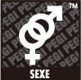
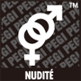
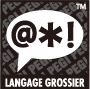
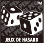

Le système de classification par âge PEGI (Pan European Game Information, système européen d'information sur les jeux) est destiné à aider les consommateurs à prendre des décisions éclairées lors de l'achat de jeux vidéo. Le système PEGI a été lancé au printemps 2003, remplaçant les différents systèmes nationaux de classification par un système unique désormais utilisé dans la plupart des pays d'Europe.
Pour les jeux en vente dans le commerce, la classification est indiquée clairement sur l'emballage. Pour les jeux vendus via le Nintendo eShop, la classification est affichée avant le téléchargement du logiciel.
À chacun des jeux classés selon le système PEGI correspond un pictogramme de classification par âge et, dans certains cas, un ou plusieurs descripteurs de contenu.
Les classes d'âge du système PEGI sont les suivantes : 3, 7, 12, 16 et 18 ans. Le pictogramme donne une indication de l'âge minimal recommandé pour utiliser le jeu. La classe d'âge n'indique pas le niveau de difficulté du jeu.




Les descripteurs sont des pictogrammes indiquant le type de contenu proposé dans le jeu. L'importance du contenu dans le jeu dépend de la classe d'âge : le contenu d'un jeu classé ≪ 16 ≫ associé au descripteur ≪ Violence ≫ peut être plus violent qu'un jeu classé ≪ 7 ≫ également associé au descripteur ≪ Violence ≫.
Pour plus d'informations sur la signalétique PEGI, visitez le site www.pegi.info.